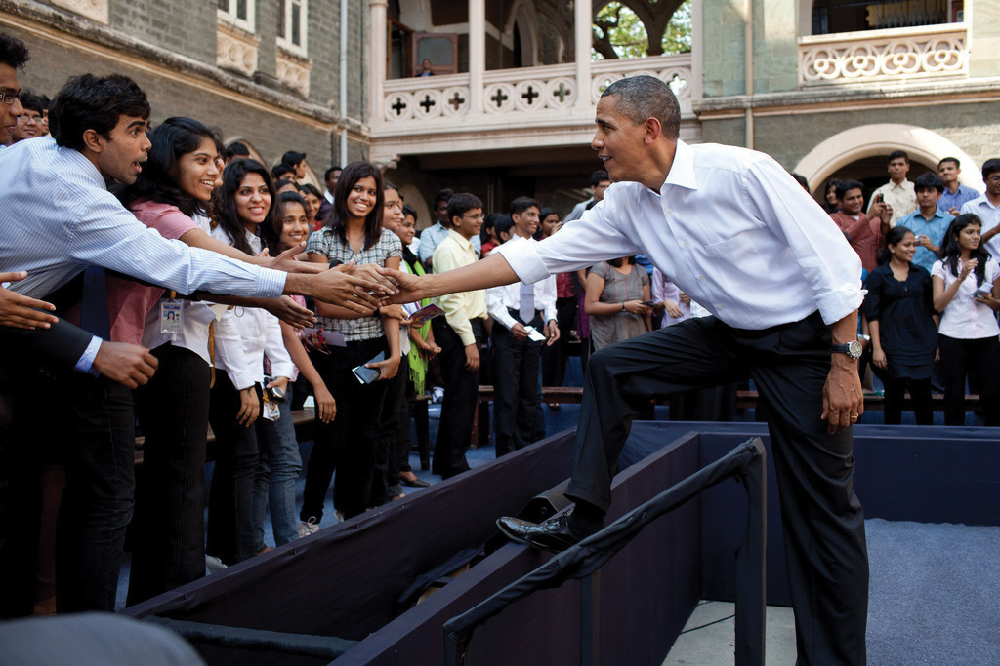
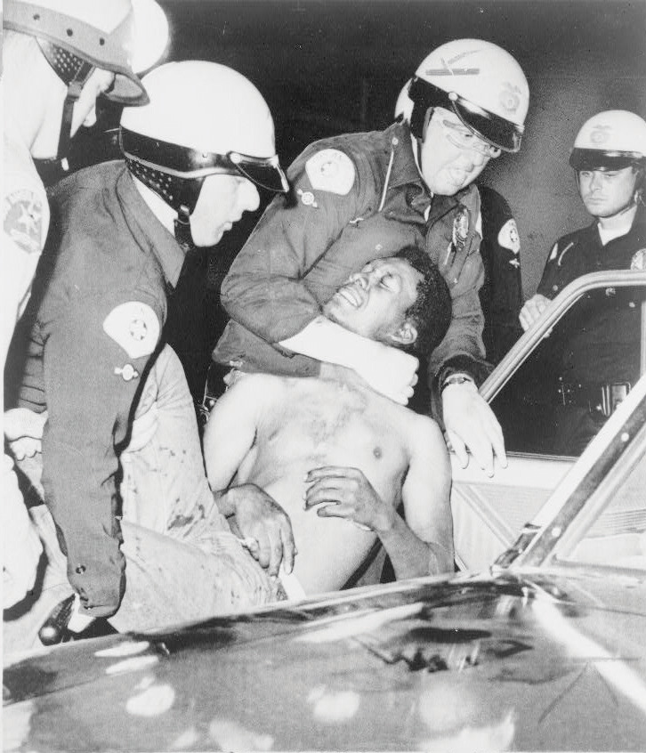
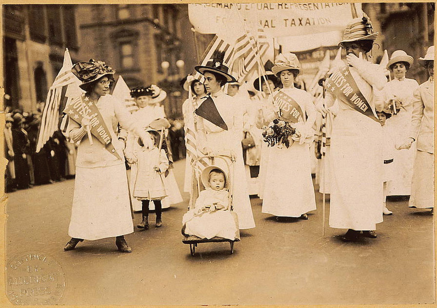
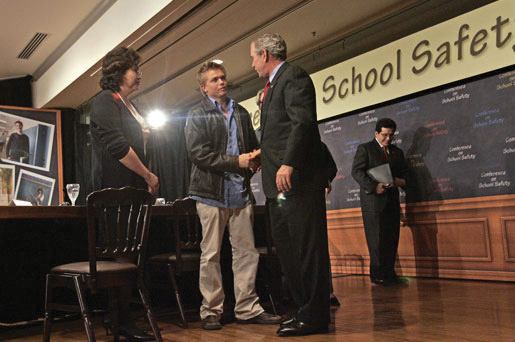
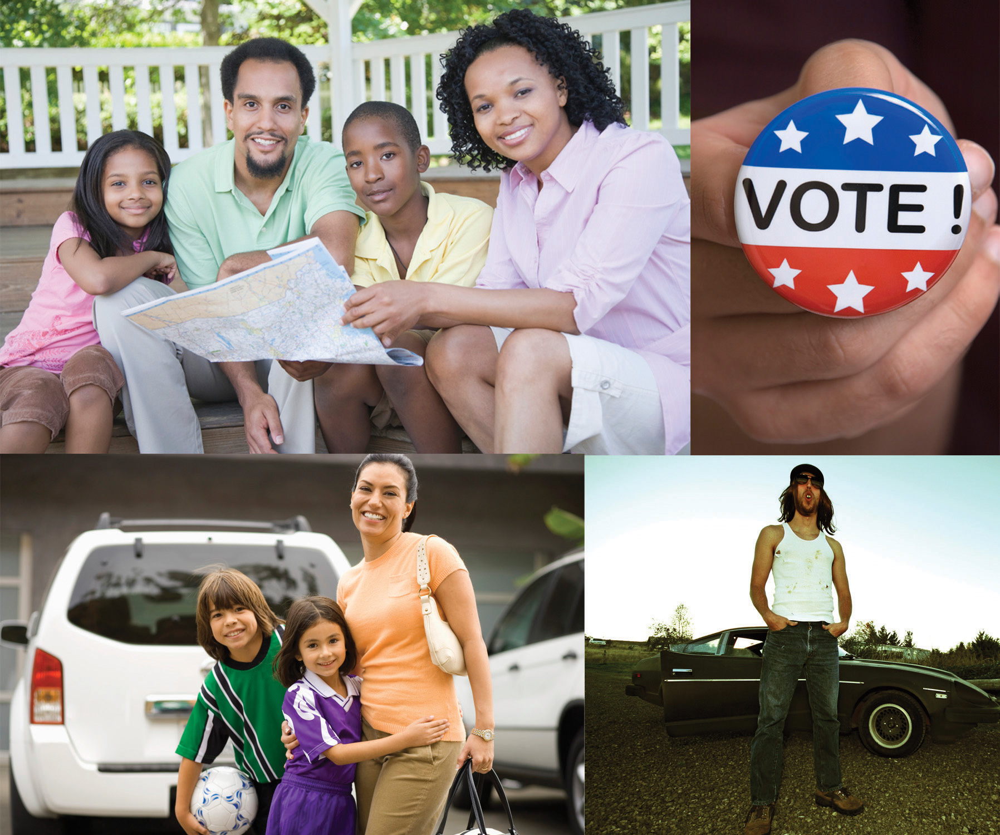

The night of the 2004 presidential election, the Associated Press (AP) released a story under the headline “2004 Not the Breakout Year for Youth Vote After All.” According to the story, “Fewer than one in 10 voters Tuesday were 18 to 24, about the same proportion of the electorate as in 2000.…A vigorous push on college campuses by both parties and national mobilization drives had raised expectations that 2004 would be the year of the youth vote.”Siobahn McDonough, “2004 Not the Breakout Year for Youth Vote After All,” Associated Press, November 2, 2004. The AP story implied that young voters had not turned out in the large numbers that many observers had predicted. It cited early exit polls, which are notoriously unreliable, as the basis for its conclusion. The article was reprinted in many newspapers, and it formed the basis of numerous television, radio, and online reports.
The article, however, was incorrect. In fact, turnout among eighteen- to twenty-four-year-olds had risen significantly from 36 percent in the 2000 presidential election to 47 percent in 2004.Center for Information & Research on Civic Learning and Engagement (CIRCLE), “Youth Voting,” http://www.civicyouth.org/?page_id=241#1. Youth-vote activists and scholars acted quickly to correct the inaccuracies through the media, but it was too late. This single article had a tremendous influence on opinion leaders and political operatives. Candidates, campaign consultants, and political party leaders cited the AP article as evidence that young voters are not a constituency that is worth targeting in elections.Diana Owen, Youth Voting and the Media (Washington, DC: George Washington University Graduate School of Political Management, 2006).
The AP story was the first to come out on the youth vote following the election, which gave it particular prominence. More importantly, the article reinforced existing stereotypes of young voters held by elites and journalists. It employed the standard “apathetic youth voter” frame that journalists have used for decades when covering young voters. This frame reflects conventional beliefs that young voters are less likely to turn out in campaigns than older voters.
The “apathetic youth voter” frame is so entrenched in political and journalistic lore that it is difficult to refute, even when evidence is to the contrary. The assumptions underlying this media frame were challenged again during the 2008 presidential campaign, as young people were a visible and active force in the election, and turnout increased from 2004. Still, postelection stories in 2008 perpetuated the myth of the “apathetic youth voter.” The Florida Sentinel proclaimed, “Young people are turning out in disproportionately low numbers.” Even the Daily Tar Heel, a college newspaper, reported, “The expected youth surge didn’t exactly pan out.”
The “apathetic youth voter” frame focuses on elections, but it typifies the media’s dominant image of the American public, which is portrayed as politically disengaged, alienated, disinterested, and uninformed. Media images of the general public’s political involvement are unflattering, but depictions of young people are worse. Mainstream media portray young people as irresponsible, self-centered, and lacking the motivation to become involved in government and politics.
Media representations of the public’s political disengagement contain elements of truth. Americans do not meet the ideal of involved and fully informed citizens that derives from the concept of the New England town meetingA form of direct democratic participation as characterized by meetings of entire communities in New England during the colonial period. of the colonial period where the entire community took part in civic affairs. Media coverage focuses on the particular aspects of political participation that typically have low rates of civic engagement—especially political party work and campaign activity—or on the aspects that are expected to have higher rates of engagement, such as voting.
The public is more politically active and aware than much press coverage would suggest. Over 50 percent of adults have joined political organizations and more than 70 percent of young people have done community service.Michael Schudson, The Good Citizen (New York: Free Press, 1998). Still, the “engaged public” remains a largely untold news story.
Americans participate in politics in many different ways, such as voting, contacting leaders, holding public office, and protesting. Social movementsLarge groups of people with common concerns who have mobilized to actively pursue political objectives. that mobilize large numbers of people on behalf of a cause are an important dimension of American political involvement. This chapter examines the origins, development, and influence of social movements. The media’s depiction of citizens’ political participation is complex and even contradictory.
After reading this section, you should be able to answer the following questions:
Americans have many options for taking part in politics, including voting, contacting public officials, campaigning, running for and holding office, protesting, and volunteering. Voting is the most prominent form of political participation. Voter registration and turnout is influenced by legal and structural factors, voter qualifications, the type of election, and voters’ enthusiasm about a particular campaign.
Political participationActions directed explicitly toward influencing the distribution of social goods and values. is action that influences the distribution of social goods and values.Steven J. Rosenstone and John Mark Hansen, Mobilization, Participation, and Democracy in America (New York: Macmillan, 1993), 4. People can vote for representatives, who make policies that will determine how much they have to pay in taxes and who will benefit from social programs. They can take part in organizations that work to directly influence policies made by government officials. They can communicate their interests, preferences, and needs to government by engaging in public debate.Sidney Verba, Kay Lehman Schlozman, and Henry E. Brady, Voice and Equality: Civic Voluntarism in American Politics (Cambridge, MA: Harvard University Press, 1995). Such political activities can support government officials, institutions, and policies, or aim to change them.
Far more people participate in politics by voting than by any other means. Yet there are many other ways to take part in politics that involve varying amounts of skill, time, and resources. People can work in an election campaign, contact public officials, circulate a petition, join a political organization, and donate money to a candidate or a cause. Serving on a local governing or school board, volunteering in the community, and running for office are forms of participation that require significant time and energy. Organizing a demonstration, protesting, and even rioting are other forms of participation.Lester W. Milbrath and M. L. Goel, Political Participation, 2nd ed. (Chicago: Rand McNally, 1977).
People also can take part in support activitiesPassive forms of politics involvement, such as attending a concert on behalf of a cause., more passive forms of political involvement. They may attend concerts or participate in sporting events associated with causes, such as the “Race for the Cure” for breast cancer. These events are designed to raise money and awareness of societal problems, such as poverty and health care. However, most participants are not activists for these causes. Support activities can lead to active participation, as people learn about issues through these events and decide to become involved.
People also can engage in symbolic participationRoutine or habitual acts that show support for or dissatisfaction with the political system., routine or habitual acts that show support for the political system. People salute the flag and recite the pledge of allegiance at the beginning of a school day, and they sing the national anthem at sporting events. Symbolic acts are not always supportive of the political system. Some people may refuse to say the pledge of allegiance to express their dissatisfaction with government. Citizens can show their unhappiness with leadership choices by the symbolic act of not voting.
For many people, voting is the primary means of taking part in politics. A unique and special political act, voting allows for the views of more people to be represented than any other activity. Every citizen gets one vote that counts equally. Over 90 percent of Americans agree with the principle that citizens have a duty to vote.William H. Flanigan and Nancy H. Zingale, Political Behavior of the American Electorate, 9th ed. (Washington, DC: CQ Press, 1999). Still, many people do not vote regularly.
Registered voters meet eligibility requirements and have filed the necessary paperwork that permits them to vote in a given locality. In addition to the requirement that voters must be eighteen years of age, states can enforce residency requirements that mandate the number of years a person must live in a place before being eligible to vote. A large majority of people who have registered to vote participate in presidential elections.
The composition of the electorate has changed radically throughout American history. The pool of eligible voters has expanded from primarily white, male property owners at the founding to include black men after the Civil War, women after 1920, and eighteen- to twenty-year-olds after 1971. The eligible electorate in the 1800s, when voter turnout consistently exceeded 70 percent, was far different than the diverse pool of eligible voters today.
Social, cultural, and economic factors can keep people from voting. Some barriers to voting are informal. The United States holds a large number of elections, and each is governed by specific rules and schedules. With so many elections, people can become overwhelmed, confused, or just plain tired of voting.
Other barriers are structural. Voter registration laws were implemented in the 1860s by states and big cities to ensure that only citizens who met legal requirements could vote. Residency requirements limited access to registration offices. Closing voting rosters weeks or months in advance of elections effectively disenfranchised voters. Over time, residency requirements were relaxed. Beginning in the 1980s, some states, including Maine, Minnesota, and Wisconsin, made it possible for people to register on Election Day. Turnout in states that have Election Day registration averages ten points higher than in the rest of the country.Raymond E. Wolfinger and Steven J. Rosenstone, Who Votes? (New Haven, CT: Yale University Press, 1980).
The United States is one of the few democracies that requires citizens to register themselves rather than having the government take responsibility for automatically registering them. Significant steps have been taken to make registration easier. In 1993, Congress passed the National Voter Registration ActA law that allows citizens to register to vote at motor vehicle and social services offices; also known as the “motor voter” law., also known as the “motor voter” law, allowing citizens to register at motor vehicle and social service offices. “Motor voter’s” success in increasing the ranks of registered voters differs by state depending on how well the program is publicized and executed.
Voter registration also has been assisted by online registration. In most cases, individuals must download the form, sign it, and mail it in. Rock the Vote (RTV), a nonpartisan youth mobilization organization, established the first online voter registration initiative in 1992 with official backing from the Congressional Internet Caucus. RTV registered over 2 million new voters in 1992, 80 percent of whom cast a ballot, and signed up over 2.5 million voters in 2008.“The Campaign: Rockers and Rappers,” The Economist, June 20, 1993, 25. Following the 2008 election, RTV lobbied the Obama administration to institute fully automated online voter registration nationally.
In all states except Maine, Vermont, and Massachusetts, inmates serving time for committing felonies lose their right to vote. At least ten states prohibit former felons from voting even after they have served their time. States argue that their legal authority to deny convicted felons voting rights derives from the Fourteenth Amendment, which stipulates that voting rights of individuals guilty of “participation in rebellion, or other crime” can be denied. This practice excludes almost 4 million people from the voting rolls.Human Rights Watch and the Sentencing Project, Losing the Vote: The Impact of Felony Disenfranchisement Laws (New York: Human Rights Watch, 2000).
Opinions are divided on this issue. Some people believe that individuals who have committed a serious crime should be deprived of the privileges enjoyed by law-abiding people. Others contend that the integrity of the democratic process is at stake and that individuals should not be denied a fundamental right once they have served their time.
Voter turnout depends on the type of election. A large number of elections are held in the United States every year, including local elections, elections for county and statewide offices, primaries, and general elections. Only a small number of people, generally under one-quarter of those eligible, participate in local, county, and state elections. Midterm elections, in which members of Congress run for office in nonpresidential-election years, normally draw about one-third of eligible voters.Steven J. Rosenstone and John Mark Hansen, Mobilization, Participation, and Democracy in America (New York: Macmillan Publishing Company, 1993), 1. Voter turnout in presidential elections is generally higher than for lower-level contests; usually more than half the eligible voters cast a ballot.
Much is made about low levels of voter turnout for presidential elections in the current era. However, there have not been great fluctuations in turnout since the institution of universal suffrage in 1920. Forty-nine percent of the voting-age public cast a ballot in the 1924 presidential contest, the same percentage as in 1996. Turnout in presidential elections in the 1960s was over 60 percent. More voters were mobilized during this period of political upheaval in which people focused on issues of race relations, social welfare, and the Vietnam War.Frances Fox Piven and Richard A. Cloward, Why Americans Still Don’t Vote (Boston: Beacon Press, 2000). Turnout was lower in the 1980s and 1990s, when the political climate was less tumultuous. There has been a steady increase in turnout since the 2000 presidential election, in which 51 percent of the voting-age public cast a ballot. Turnout was 55 percent in 2004 and 57 percent in 2008, when 132,618,580 people went to the polls.Michael McDonald, “Voter Turnout,” United States Election Project, http://elections.gmu.edu/voter_turnout.htm.
Turnout varies significantly across localities. Some regions have an established culture of political participation. Local elections in small towns in New England draw up to 80 percent of qualified voters. Over 70 percent of Minnesota voters cast ballots in the 2008 presidential election compared with 51 percent in Hawaii and West Virginia.Michael McDonald, “Voter Turnout,” United States Election Project, http://elections.gmu.edu/voter_turnout.htm.
Turnout figures can be skewed by undercounting the vote. This problem gained attention during the 2000 election. The contested vote in the Florida presidential race resulted in a recount in several counties. Ballots can be invalidated if they are not properly marked by voters or are not read by antiquated voting machines. Political scientists have determined that presidential election turnout is underestimated on average by 4 percent, which translates into hundreds of thousands of votes.William H. Flanigan and Nancy H. Zingale, Political Behavior of the American Electorate, 9th ed. (Washington, DC: CQ Press, 1999).
Voters in midterm elections choose all the members of the US House of Representatives and one-third of the Senate, along with office holders at the state and local levels. Voter turnout levels have hovered around 40 percent in the past three midterm elections. Turnout for the 2010 midterm election was 41.6 percent, compared with 41.4 percent in 2006 and 40.5 percent in 2002.Michael McDonald, “Voter Turnout,” United States Election Project, http://elections.gmu.edu/voter_turnout.htm. Young voters are less likely to turn out in midterm elections than older citizens. In 2010, only about 23 percent of eligible eighteen- to twenty-nine-year-olds cast a ballot.Center for Information & Research on Civic Learning and Engagement (CIRCLE), “Young Voters in the 2010 Elections,” http://www.civicyouth.org/wp-content/uploads/2010/11/2010-Exit-Poll-FS-Nov-17-Update.pdf. The United States Election Project provides information about voter turnout in presidential campaigns.
People have many options for engaging in politics. People can act alone by writing letters to members of Congress or staging acts of civil disobedienceDeliberate, nonviolent violation of laws that people consider to be unjust, committed in order to draw attention to a cause.. Some political activities, such as boycotts and protest movements, involve many people working together to attract the attention of public officials. Increasingly people are participating in politics via the media, especially the Internet.
Expressing opinions about leaders, issues, and policies has become one of the most prominent forms of political participation. The number of people contacting public officials at all levels of government has risen markedly over the past three decades. Seventeen percent of Americans contacted a public official in 1976. By 2008, 44 percent of the public had contacted their member of Congress about an issue or concern.Congressional Management Foundation, Communicating with Congress: How the Internet Has Changed Citizen Engagement (Washington, DC: Congressional Management Foundation, 2008). E-mail has made contacting public officials cheaper and easier than the traditional method of mailing a letter.
Students interning for public officials soon learn that answering constituent mail is one of the most time-consuming staff jobs. Every day, millions of people voice their opinions to members of Congress. The Senate alone receives an average of over four million e-mail messages per week and more than two hundred million e-mail messages per year.Congressional Management Foundation, Communicating With Congress: How the Internet Has Changed Citizen Engagement (Washington, DC: Congressional Management Foundation, 2008). Still, e-mail may not be the most effective way of getting a message across because office holders believe that an e-mail message takes less time, effort, and thought than a traditional letter. Leaders frequently are “spammed” with mass e-mails that are not from their constituents. Letters and phone calls almost always receive some kind of a response from members of Congress.
The number of people who give money to a candidate, party, or political organization has increased substantially since the 1960s. Over 25 percent of the public gave money to a cause and 17 percent contributed to a presidential candidate in 2008.Pew Research Center for the People and the Press, “Pew Research Center for the People & the Press Re-Interview Poll, Nov, 2008,” Poll Database, http://people-press.org/questions/?qid=1720790&pid=51&ccid=51#top. Direct mail and e-mail solicitations make fundraising easier, especially when donors can contribute through candidate and political-party websites. A positive side effect of fundraising campaigns is that people are made aware of candidates and issues through appeals for money.Gary C. Jacobson, The Politics of Congressional Elections (New York: HarperCollins, 1997).
Americans are more likely to make a financial contribution to a cause or a candidate than to donate their time. As one would expect, those with higher levels of education and income are the most likely to contribute. Those who give money are more likely to gain access to candidates when they are in office.
In addition to voting, people engage in a range of activities during campaigns. They work for political parties or candidates, organize campaign events, and discuss issues with family and friends. Generally, about 15 percent of Americans participate in these types of campaign activities in an election year.Sidney Verba, Kay Lehman Schlozman, and Henry E. Brady, Voice and Equality: Civic Voluntarism in American Politics (Cambridge, MA: Harvard University Press, 1995), 70.
New media offer additional opportunities for people to engage in campaigns. People can blog or participate in discussion groups related to an election. They can create and post videos on behalf of or opposed to candidates. They can use social networking sites, like Facebook, to recruit supporters, enlist volunteers for campaign events, or encourage friends to donate money to a candidate.
Figure 8.5
Participation in the 2008 presidential election was greater than usual, as people were motivated by the open race and the candidate choices.
Source: Photo courtesy of the White House Photo (Pete Souza), http://commons.wikimedia.org/wiki/File:Obama_greets_students_following_a_town_hall _meeting_at_St._Xavier_College.jpg.
The 2008 presidential election sparked high levels of public interest and engagement. The race was open, as there was no incumbent candidate, and voters felt they had an opportunity to make a difference. Democrat Barack Obama, the first African American to be nominated by a major party, generated enthusiasm, especially among young people. In addition to traditional forms of campaign activity, like attending campaign rallies and displaying yard signs, the Internet provided a gateway to involvement for 55 percent of Americans.Diana Owen, “The Campaign and the Media,” in The American Elections of 2008, ed. Janet M. Box-Steffensmeier and Steven E. Schier (Lanham, MD: Rowman & Littlefield, 2009), 9–32. Young people, in particular, used social media, like Facebook, to organize online on behalf of candidates. Students advertised campus election events on social media sites, such as candidate rallies and voter registration drives, which drew large crowds.
Being a public official requires a great deal of dedication, time, energy, and money. About 3 percent of the adult population holds an elected or appointed public office.Sidney Verba, Kay Lehman Schlozman, and Henry E. Brady, Voice and Equality: Civic Voluntarism in American Politics (Cambridge, MA: Harvard University Press, 1995), 51–52. Although the percentage of people running for and holding public office appears small, there are many opportunities to serve in government.
Potential candidates for public office must gather signatures on a petition before their names can appear on the ballot. Some people may be discouraged from running because the signature requirement seems daunting. For example, running for mayor of New York City requires 7,500 signatures and addresses on a petition. Once a candidate gets on the ballot, she must organize a campaign, solicit volunteers, raise funds, and garner press coverage.
Protests involve unconventional, and sometimes unlawful, political actions that are undertaken in order to gain rewards from the political and economic system. Protest behavior can take many forms. People can engage in nonviolent acts of civil disobedience where they deliberately break a law that they consider to be unjust.Michael Lipsky, “Protest as a Political Resource,” American Political Science Review, December 1968, 1145. This tactic was used effectively during the 1960s civil rights movementA social movement begun in the 1950s to combat discrimination against African Americans. when African Americans sat in whites-only sections of public busses. Other forms of protest behavior include marking public spaces with graffiti, demonstrating, and boycotting. Extreme forms of protest behavior include acts that cause harm, such as when environmental activists place spikes in trees that can seriously injure loggers, terrorist acts, like bombing a building, and civil war.
Figure 8.6 The Watts Riots
The Watts riots in 1965 were the first of a number of civil disturbances in American cities. Although its participants thought of them as political protests, the news media presentation rarely gave that point of view.
Source: Photo courtesy of New York World-Telegram, http://commons.wikimedia.org/wiki/File:Wattsriots-policearrest-loc.jpg.
Extreme discontent with a particular societal condition can lead to rioting. Riots are frequently spontaneous and are sparked by an incident that brings to a head deep-seated frustrations and emotions. Members of social movements may resort to rioting when they perceive that there are no conventional alternatives for getting their message across. Riots can result in destruction of property, looting, physical harm, and even death. Racial tensions sparked by a video of police beating Rodney King in 1991 and the subsequent acquittal of the officers at trial resulted in the worst riots ever experienced in Los Angeles.
The Rodney King Video
In March 1991, KTLA News at Ten in Los Angeles interrupted programming to broadcast an eighty-one-second amateur videotape of several police officers savagely beating black motorist Rodney King as he stood next to his vehicle. A nineteen-second edit of the tape depicted the most brutal police actions and became one of the most heavily broadcast images in television news history. The original and the edited tape tell two different stories of the same event.
Viewing the entire tape, one would have seen a belligerent and violent Rodney King who was difficult for police to constrain. Not filmed at all was an intoxicated King driving erratically, leading police on an eight-mile, high-speed chase through crowded streets.
The edited video showing the beating of King told a different story of police brutality and was the basis of much controversy. Race relations in Los Angeles in 1991 were strained. The tape enraged blacks in Los Angeles who saw the police actions as being widespread within the Los Angeles Police Department and not an isolated incident.
Four white officers were tried in criminal court for the use of excessive force, and they were acquitted of all but one charge. Jurors were shown the entire tape, not just the famous nineteen-second clip. Soon after the verdict was announced, riots broke out. Demonstrators burned buildings and assaulted bystanders. Fifty-four people were killed and two thousand were wounded. Property damage was in the millions of dollars.

The video of the beating of Rodney King in Los Angeles in 1991 sparked riots.
Source: Used with permission from AP Photo/Mark J. Terill (top) and AP Photo/Nick Ut (bottom).
CBS News Report on the Rodney King Incident
The CBS News report on the Rodney King incident included the following controversial video.
LA Riots of 1992: Rodney King Speaks
(click to see video)The following video is the CNN News Report on the Los Angeles Riots, including Rodney King’s appeal to stop the violence.
College students in the 1960s used demonstrations to voice their opposition to the Vietnam War. Today, students demonstrate to draw attention to causes. They make use of new communications technologies to organize protests by forming groups on the Internet. Online strategies have been used to organize demonstrations against the globalization policies of the World Trade Organization and the World Bank. Over two hundred websites were established to rally support for protests in Seattle, Washington; Washington, DC; Quebec City, Canada; and other locations. Protest participants received online instructions at the protest site about travel and housing, where to assemble, and how to behave if arrested. Extensive e-mail listservs keep protestors and sympathizers in contact between demonstrations. Twitter, a social messaging platform that allows people to provide short updates in real time, has been used to convey eyewitness reports of protests worldwide. Americans followed the riots surrounding the contested presidential election in Iran in 2009 on Twitter, as observers posted unfiltered, graphic details as the violent event unfolded.
About half the population takes part in national and community political affairs by joining an interest group, issue-based organization, civic organization, or political party. Organizations with the goal of promoting civic action on behalf of particular causes, or single-issue groupsOrganizations with the goal of promoting action on behalf of particular causes., have proliferated. These groups are as diverse as the People for the Ethical Treatment of Animals (PETA), which supports animal rights, the Concord Coalition, which seeks to protect Social Security benefits, and the Aryan Nation, which promotes white supremacy.
There are many ways to advocate for a cause. Members may engage in lobbying efforts and take part in demonstrations to publicize their concerns. They can post their views on blogs and energize their supporters using Facebook groups that provide information about how to get involved. Up to 70 percent of members of single-issue groups show their support solely by making monetary contributions.Robert D. Putnam, Bowling Alone: America’s Declining Social Capital (New York: Simon & Schuster, 2000).
Even activities that on the surface do not seem to have much to do with politics can be a form of political participation. Many people take part in neighborhood, school, and religious associations. They act to benefit their communities without monetary compensation.
Maybe you coach a little league team, visit seniors at a nursing home, or work at a homeless shelter. If so, you are taking part in civil societyThe community of individuals who volunteer and work cooperatively outside of formal governmental institutions., the community of individuals who volunteer and work cooperatively outside of formal governmental institutions.Don E. Eberly, America’s Promise: Civil Society and the Renewal of American Culture (Lanham, MD: Rowman & Littlefield, 1998). Civil society depends on social networksAssociations of friends and acquaintances, based on trust and goodwill, that are able to work together to achieve common goals., based on trust and goodwill, that form between friends and associates and allow them to work together to achieve common goals. Community activism is thriving among young people who realize the importance of service that directly assists others. Almost 70 percent of high school students and young adults aged eighteen to thirty report that they have been involved in community activities.Peter D. Hart Research Associates, New Leadership for a New Century (Washington, DC: Public Allies, August 28, 1998).
There are many different ways that Americans can participate in politics, including voting, joining political parties, volunteering, contacting public officials, contributing money, working in campaigns, holding public office, protesting, and rioting. Voting is the most prevalent form of political participation, although many eligible voters do not turn out in elections. People can take part in social movements in which large groups of individuals with shared goals work together to influence government policies. New media provide novel opportunities for political participation, such as using Facebook to campaign for a candidate and Twitter to keep people abreast of a protest movement.
After reading this section, you should be able to answer the following questions:
People get involved in politics for a variety of reasons. They may be personally motivated because of an event that changed their lives. They may receive invitations to participate from friends, organizations, political parties, or a candidate’s campaign. A person’s socialization, life experience, and attitudes toward politics can influence participation. Some people have a strong sense of civic duty and a belief that they can influence government, which compels them to act. Barriers, such as legal obstacles, may preclude some people from engaging politically.
Most people do not wake up one morning and decide that they are going to engage in politics. They must be motivated to participate, often by people or organizations reaching out to them and asking them to get involved. Increasingly people received digital invitations to participate through Facebook groups formed by friends, e-mail solicitations from campaigns and interest groups, and podcasts from political organizations.
Traditionally, political parties helped mobilize people by recruiting volunteers for campaigns and other political events. Parties provided a training ground for candidates and leaders and rallied people around issues. Today, parties’ role in directly mobilizing people to participate in politics has diminished. People are more inclined to support a candidate who represents their interests than a political party.Jack Dennis and Diana Owen, “The Partisanship Puzzle,” in After the Boom: The Politics of Generation X, ed. Stephen C. Craig, and Stephen Earl Bennett (Lanham, MD: Rowman & Littlefield, 1997), 43–61.
Interest groups and candidates’ campaigns can encourage people to take part in politics. They use marketing strategies to target potential activists based on demographic characteristics and political orientations. Organizations acquire lists of prospects from political parties and market research firms, and they use these lists to contact people by mail, telephone, and e-mail.Steven E. Schier, By Invitation Only: The Rise of Exclusive Politics in the United States (Pittsburgh, PA: University of Pittsburgh Press, 2000). They can microtargetTo use a marketing strategy in which potential political activists are identified and solicited on the basis of their demographic characteristics and consumer behavior. supporters based on specific characteristics, such as voters who are in their twenties, drink Starbucks coffee, enjoy Judd Apatow films, and work in the legal field.
Figure 8.7
Religious convictions can influence people to participate in politics.
Source: Photo courtesy of dbkinghttp://commons.wikimedia.org/wiki/File:Christian_protester_-_Tea_Party_march.jpg.
Trade unions mobilize blue-collar workers, especially on behalf of the Democratic Party. Black churches are instrumental in organizing political action in the African American community, fundamentalist congregations provide a base for the Christian Right, and the Catholic Church helps mobilize the pro-life movement against abortion and anti–death-penalty activists.
People can establish the habit of participating in politics through political socializationThe process by which people acquire their political beliefs, attitudes, and behaviors., the process by which people acquire their political beliefs, attitudes, and actions. Political experiences with families, schools, friendship groups, churches, community organizations, and mass media can motivate people to become lifelong political participants. If your parents are community activists there is a good chance that you also will be active at some point in your life.Richard M. Merelman, Making Something of Ourselves (Berkeley: University of California Press, 1984). People can be socialized to participation through civic education when they learn in school how democracy works and how they can take part. Students can gain experience by participating in extracurricular activities, student government, or community volunteer programs. These activities place young people in social and political networks with others who have a strong sense of civic dutyThe responsibility of a citizen to take part in community life., the belief that one has a responsibility to take part in community life.
People’s integration into their communities is strongly related to their level of political activity. Those who are mobile and have not established community roots find it more difficult to participate in politics because they are not part of a social network. It takes about three to five years to develop friendship networks, learn about the problems facing a community, and identify which people are the key players.M. Margaret Conway, Political Participation in the United States, 3rd ed. (Washington, DC: CQ Press, 2000).
Difficult life experiences can cause people to act who never thought they would become involved. President Bill Clinton pardoned Dorothy Gaines and Kemba Smith, who had received long mandatory prison sentences on drug charges with no hope of parole. They were not involved with drugs but had boyfriends who were dealers. It is a crime under federal law to associate with known drug dealers. Ms. Gaines lobbied for her freedom from her jail cell, working with civil rights organizations, and she drew media attention to her problem, including a widely read article in People magazine. Kemba Smith’s father, Gus, an accountant who had never been politically active, worked to secure his daughter’s release. A cover story in Ebony magazine rallied support for her case, and a film was made about her life. Since the pardons, Dorothy Gaines, her father, and Kemba Smith have continued to lobby for changes in the sentencing laws. Kemba Smith has established a foundation to educate young people about making proper decisions.
Kemba Smith Foundation
Learn more about Kemba Smith’s foundation at http://www.kembasmithfoundation.org.
People’s attitudes about government and politics can influence their decision to participate. People who have a strong sense of political efficacyAn individual’s perception that she can make a difference in politics and governmental affairs., are interested in politics, and have a sense of civic duty are more likely to participate. Political efficacy is the belief that you personally can make a difference in governmental affairs.Sidney Verba and Norman H. Nie, Participation in America: Political Democracy and Social Equality (New York: Harper & Row, 1972). During the 2008 presidential election, people who believed that their vote could make a difference were more likely to cast a ballot than those who felt that their vote didn’t matter.
Americans’ interest in politics had declined for about two decades beginning in the 1980s. Only about one-quarter of the public in 2000 expressed much interest in the presidential campaign, and there was even less interest in other aspects of politics. Only about 40 percent of citizens felt strongly that voting was an important civic duty. The 2008 presidential campaign bucked this trend: around 80 percent of the public expressed interest in the election and over 60 percent considered voting to be their civic duty. Americans are typically less interested in nonpresidential elections. Forty-three percent of the public claimed to be interested in the 2010 congressional midterm elections.Pew Research Center for the People and the Press, “Pew Weekly News Interest Index Poll, Oct, 2010,” Poll Database, http://people-press.org/questions/?qid=1772828&pid=51&ccid=51#top: “Thinking about this year’s (2010) Congressional elections, would you say that you are interested in what’s happening in elections around the country?”
Political interest has been bolstered by the ability of people to take part in politics and express their opinions more easily through digital media. People feel like they have a greater say in government and can reach out to leaders through e-mail and online discussion forums. Political leaders have established social media accounts on Facebook and Twitter in order to share information and to enable greater interaction with their constituents. “U.S. Politics on Facebook” provides a gateway to the pages of politicians, elected officials, and political campaigns.
The expectation that political participation will be rewarding can spark people to become active. Some people are motivated by the belief that they will be connected to powerful leaders and receive material benefits, such as a chance to further their careers or get help with a personal problem. Others embrace the opportunities to meet people and socialize while working together, or they are happy to do something good for the community. High schools and colleges throughout the nation have instituted community service programs to stimulate lifelong participation based on the personal gratification students experience when they realize that their efforts make a difference.
Figure 8.8
A majority of US high school students and many other young people participate in community service activities ranging from tutoring after school to cleaning up public spaces.
Source: Photo courtesy of US Navy Mass Communication Specialist 3rd Class Daniel Viramontes, http://commons.wikimedia.org/wiki/File:US_Navy_090804-N-7280V-398 _Sailors_paint_a_classroom_during_a _community_service_project.jpg.
People often are motivated to participate in politics because they are targets of mobilization efforts by political parties and interest groups. They also can acquire the habit of participating politically through the process of political socialization or have a life experience that prompts them to act. Political attitudes such as civic duty and a sense of political efficacy can influence a person’s decision to participate. People may seek personal gratification through political action, as they enjoy working with others and helping their community. Legal factors such as voter registration requirements can impede participation.
After reading this section, you should be able to answer the following questions:
Meaningful and regular opportunities for all people to participate must be guaranteed by a democratic political system, whether or not everyone chooses to take part. But not all Americans take part in politics, nor are the opportunities for participation equal. Voters and political activists generally are older, more educated, and better off financially than the general population. These people have the best chance of having their views represented in government. Meanwhile, those who rely the most on government programs and policies, such as recipients of public assistance, often have fewer opportunities to participate and are less engaged.
Socioeconomic statusPeople’s levels of education, income, and occupation, which are strongly linked to patterns of political participation. (SES) is determined by people’s levels of education, income, and occupation. Wealthier and better educated people tend to vote more often, participate more in political activities, and donate more money to causes than poorer or less educated people. They also have greater access to the resources that facilitate political activity, including contacts with people in powerful positions. People’s occupations also are related to their participation, as people in managerial and professional positions are the most politically active, followed by craftspersons, service workers, and laborers. Many managers and professionals follow politics as part of their jobs. The unemployed are the least inclined to take part.
Education has the strongest impact on participation, as it provides people with background knowledge of how the political system works. Educated people develop the skills that allow them to follow and understand events through the mass media. They are likely to form opinions about political issues and engage in discussions. The political blogs with the most readers, such as Daily Kos and Huffington Post, are written and read by well-educated people.Matthew Hindman, The Myth of Digital Democracy (Princeton, NJ: Princeton University Press, 2008). Education prepares people to deal with the bureaucratic aspects of participation, such as registering to vote or organizing a petition drive. Eighty-three percent of people with graduate school education voted in the 2008 presidential election compared with 39 percent of those without a high school diploma.Michael McDonald, “Current Population Survey Voting and Registration Supplement,” United States Election Project, http://elections.gmu.edu/CPS_2008.html. The 2010 midterm elections were decided primarily by people with at least some college experience. Less than 5 percent of voters had no high school education, 16 percent were high school graduates, 29 percent had some college, and 50 percent were college graduates.Ezra Klein, “Who Graduates, Who Votes and Who’s Unemployed—in the 2010 Midterm Elections,” washingtonpost.com, http://voices.washingtonpost.com/ezra-klein/2010/12/who_graduates_who_votes_and_wh.html.
Political participation differs notably by age. People between the ages of thirty-five and sixty-five are the most politically active. At this stage in life, people are more likely than younger people to have established homes, hold steady jobs, and be settled into communities. Those with stable community roots often have strong incentives and greater resources for becoming involved in politics.
While younger people turn out in elections less often than older people, youth voting has been on the rise in presidential elections since 2004. Turnout among eighteen- to twenty-four-year-olds dropped from 50 percent in 1972, the first presidential election year after the voting age was lowered to eighteen, to 36 percent in 2000. Turnout among senior citizens, people sixty-five and older, increased to nearly 70 percent in that same time period.Project Vote-Smart, Democracy Inclusion Project, http://www.vote-smart.org/yip. Young voter turnout rose to 47 percent in 2004 and 51 percent in 2008, partly as a result of voter registration and mobilization efforts by groups like Rock the Vote. The youth vote contributed to the success of Democratic presidential candidate Barack Obama in 2008, as young volunteers provided countless hours of campaign support.Center for Information & Research on Civic Learning and Engagement (CIRCLE), “Youth Voting,” http://www.civicyouth.org/?page_id=241#1. Information about young voters can be obtained from the Center for Information & Research on Civic Learning and Engagement.
Figure 8.9
Young people have brought issues to the attention of public officials and worked effectively for positive change.
Source: Photo courtesy of the US Department of State, http://www.flickr.com/photos/statephotos/5085000843/.
People under the age of thirty are among the least involved in mainstream forms of participation. Young people often lack the money and time to participate. Still, many young people realize that participation matters. Reacting to problems they see in their hometowns, youth have formed groups to work for change. They have successfully lobbied government officials, spoken out at public meetings, and provided formal testimony at hearings. Young people have established safety policies in schools, protested against increases in college tuition rates, and prompted the creation of recreational facilities for biking, skateboarding, and ice hockey.
Political scientists and journalists often talk about the gender gapThe difference that exists between men’s and women’s political participation. in participation, which assumes women lag behind men in their rates of political engagement. The gender gap is closing for some forms of participation, such as voting, but still exists for activities such as running for office.
Women turn out to vote more frequently than men. Since 1986, women have exceeded men’s turnout rate in presidential elections. Sixty-six percent of women cast a ballot in 2008 compared with 62 percent of men. Women have a strong sense of civic duty and believe that voting is a citizen’s obligation. The prominence in campaigns of issues of importance to women, such as abortion, education, and child welfare, also encourages women to vote.Richard Seltzer, Jody Newman, Melissa Vorhees Leighton, Sex as a Political Variable (Boulder, CO: Lynne Reinner, 1997).
Since the 1990s, women have been as likely as men to contact members of congress, sign and circulate petitions, attend local political meetings, and donate their time to political causes. They take part in local and state political activities more than in the national realm, where most media attention is focused. However, women are somewhat less inclined than men to use new media, such as online news sites and blogs, for politics.
A significant gender gap in participation exists for running for and holding political office. While women make up more than half the population, they constitute far less than half of the elected officeholders, especially at the national level. A total of 274 women have served in Congress since 1917, when Jeannette Rankin (R-MT) was the first woman elected to Congress. A record number of women—over 270—ran in the congressional primaries in 2010, although many were not successful in their bids. There are 75 female House members in the 112th Congress, constituting 17 percent of the 435-member body, which is a historical high. Eighteen of the one hundred senators are women.Office of the Clerk, US Capitol, Women in Congress website, http://womenincongress.house.gov.
Women in Congress
The Women in Congress website of the Office of the Clerk of the US Capitol provides historical information and data on women members of Congress.
Figure 8.10

An increasing number of women are running for national office.
Source: Photo courtesy of the Office of the Speaker, http://commons.wikimedia.org/wiki/File:Speaker_Nancy_Pelosi.jpg and http://commons.wikimedia.org/wiki/File:Linda_McMahon_Grilling_--_Sgt._R.K._Blue.jpg.
There is little evidence today that female candidates have a harder time attracting fair news coverage, raising money, or getting votes than male candidates running as challengers or for open seats. In the 2010 midterm elections, some of the best-funded candidates were women. However, women candidates often face male incumbents, candidates already in office, who are difficult to defeat.R. Darcy, Susan Welch, and Janet Clark, Women, Elections, and Representation (Lincoln: University of Nebraska Press, 1994). Motherhood becomes an issue for women who seek or hold public office. The 2008 Republican vice presidential candidate, Sarah Palin, faced scrutiny by the press and voters because she was the mother of five children, including a four-month-old baby with Down syndrome.
Participation differs among members of racial and ethnic groups. Specific patterns of participation are associated with blacks, Latinos, and Asian Americans and Pacific Islanders.
Discriminatory practices kept black voter turnout low until after the passage of the Voting Rights Act of 1965. Poll taxesFees that had to be paid before a citizen could register to vote; this requirement disenfranchised the poor, including black citizens., fees that had to be paid before a citizen could register to vote, disenfranchised the poor, many of whom were black. Literacy testsTests requiring people to demonstrate their ability to read, write, and interpret documents before being allowed to register to vote and that were used to deny blacks voting rights., which required people to demonstrate their ability to read, write, and interpret documents prior to voting, were applied unfairly to blacks. The “white primaryDemocratic Party primary elections in certain Southern states that permitted only whites to vote.” restricted voting in Democratic primaries to whites in certain Southern states. The Southern Democratic party was so dominant that winning the primary was tantamount to election to office. Intimidation and violence by groups such as the Ku Klux Klan kept black voters from the polls. Eventually, civil rights protests and litigation resulted in the elimination of formal barriers to voting. Today, black citizens vote at least as often as white citizens who share the same socioeconomic status. Sixty-five percent of black voters turned out in the 2008 presidential election compared with 66 percent of white voters. Over 90 percent of black voters supported African American candidate Barack Obama.Michael McDonald, “Current Population Survey Voting and Registration Supplement,” United States Election Project, http://elections.gmu.edu/CPS_2008.html.
Black and white Americans are about equal in how much time and effort they devote to activities other than voting. However, they differ in the types of activities in which they engage. Whites are more likely to contact public officials and join political organizations. Black citizens are active in election campaigns and social movements.
The Latino population in the United States is well established and has grown to over 47 million people from diverse countries of origin. Although they form a substantial political bloc, only 49 percent of eligible Latino voters turned out in the 2008 presidential election. Latinos tend to participate in other forms of political activity with less frequency than either white or black citizens. In 2010, however, three Latino candidates were elected to top offices, including two governors and one senator, for the first time in history. The Pew Hispanic Center provides information and data on Latino American politics.
Figure 8.11

Candidates routinely aim campaign ads at the fast-growing Latino and Asian American populations.
Source: Photo courtesy of (Brian), http://commons.wikimedia.org/wiki/File:Si_se_puede,_Tejas_Obama.jpg.
Language is one barrier to Latino participation. Candidates recognize that Latinos constitute a large and growing voting bloc and have begun campaigning in Spanish. During the 2000 presidential election campaign, candidate George W. Bush ran nearly as many ads in Spanish as in English.Rush Schriefer, Bush campaign media consultant, interview by Owen, May 22, 2001. The 2008 presidential candidates’ websites featured extensive Spanish-language content, as did the websites of a good number of congressional candidates in 2010.
According to the US Census, Asian Americans and Pacific Islanders are the fastest growing and most diverse ethnic group. Yet their rates of participation are lower than for other groups. In 2008, 48 percent of Asian Americans turned out to vote.Douglas R. Hess, “Analysis of the 2008 Current Population Survey (CPS) Voter and Registration Supplement,” http://www.projectvote.org/images/publications/Reports%20on%20the%20Electorate/Analysis%20of%20the%202008%20CPS%20Voting%20Supplement.pdf. Cultural factors contribute to the lower levels of Asian American and Pacific Islander voting. Some are recent immigrants who still maintain strong ties to their ethnic culture. Asian Americans who have been victims of hate crimes or consider themselves to be part of a deprived group find their way to the polls in greater numbers.The White House Commission on Asian Americans and Pacific Islanders, A People Looking Forward (Washington, DC: US Government, 2001).
Who participates in politics depends on a variety of factors, including socioeconomic status, age, gender, and race and ethnicity. Those with the most money, time, and skills are more likely to participate. Older people with higher education and income are the most likely to vote and take part in politics. People who have the least in society, and who are most in need of government assistance, are often the most poorly equipped to take action to improve their lot.
After reading this section, you should be able to answer the following questions:
Thus far our discussion has focused primarily on how and why individuals decide to participate in politics by engaging in activities such as voting or running for office. There are times when groups of people who are concerned about a particular issue or idea join forces to demand government action. A social movement is formed when large numbers of people organize and mobilize to actively pursue common political objectives.Jo Freeman and Victoria Johnson, eds., Waves of Protest (Lanham, MD: Rowman & Littlefield, 1999).
A social movement has a formal and enduring organizational structure as well as recognized leaders. Movements begin with people who share concerns about long-standing societal problems and believe that their rights and interests are not being adequately represented. They can evolve from grassroots groups into national organizations and even become interest groups that lobby government officials. Social movements can last for months, years, or even decades. The farmworkers’ movement was founded in the 1960s by César E. Chávez and still exists today. Its national organization, the United Farm Workers, seeks congressional legislation to guarantee fair wages and treatment of undocumented workers.United Farm Workers of America, “Action Alert! Urge Congress to Support UFW-Sponsored Bills Allowing an Undocumented Farm Worker to Earn Legalization,” 2001, http://www.ufw.org/gallowact.htm.
Movement participants assume that collective actionCooperative activities by groups in pursuit of a common goal., cooperative activities by groups in pursuit of a common goal, will be more effective in gaining the attention of media and government officials to instigate change than individuals acting on their own. Establishing a communications network to energize participants and mobilize them for action is a key component of a social movement. The digital media have become important organizing tools for social movements. They can use websites, Twitter feed, social media, text messages, and other platforms to publicize their cause, recruit members, fundraise, and organize events.
The United States has a long tradition of social movements that have sparked major changes in political processes and government policies. The abolitionist movementA social movement in the mid-1800s that sought to end slavery. of the mid-1800s sought to end slavery, an issue that contributed to the outbreak of the Civil War. The temperance movementA movement that prompted Congress to pass the Eighteenth Amendment in 1919, instituting Prohibition, which forbade the sale or transportation of alcohol. Prohibition was repealed in 1935., led by the Anti-Saloon League and the Women’s Christian Temperance Union, prompted Congress to pass the Eighteenth Amendment in 1919 prohibiting the sale or transportation of alcohol. Prohibition was repealed in 1935.
Figure 8.12

People, including many women, were involved in the abolitionist movement against slavery in the mid-1800s.
Guaranteeing the right to vote to all citizens has been the focus of some of the most important social movements. The Constitution at the time of the founding guaranteed suffrage only to white, male landowners. States placed restrictions on voting based on race, age, sex, religion, and even personal character. All states had dropped the requirement for land ownership by 1844, but constitutional restrictions based on race remained until 1870 and sex until 1920.
The Fifteenth Amendment to the Constitution formally ended race-based limitations on voting in 1870. However, minority citizens were not truly enfranchised until the passage of the Civil Rights Act of 1964Legislation passed by the US Congress with the goal of guaranteeing African Americans equal rights under the law. and the Voting Rights Act of 1965. This legislation was the result of pressure on the government by the civil rights movement.
The civil rights movement emerged in the 1950s in reaction to discrimination against African Americans in Southern states. Segregationist policies placed restrictions on black citizens’ right to vote and violated their basic civil rights in other ways. African Americans were forced to use facilities separate from whites, such as restrooms and water fountains, and to sit at the back of public buses. Black students attended schools that were usually inferior to schools for whites.
United under the Southern Christian Leadership Conference, black churches formed one foundation of the civil rights movement. Dr. Martin Luther King Jr., one of the movement’s leaders, emphasized that nonviolent direct action would be used to expose racial injustices. Civil rights activists boycotted businesses that employed discriminatory practices. They engaged in acts of civil disobedience that disrupted established patterns of daily life. Blacks ate at white lunch counters, were arrested, and jailed. Southern blacks mounted large-scale voter registration drives. In the summer of 1963 alone, over fourteen hundred demonstrations and marches were staged to protest disenfranchisement and other forms of discrimination.
These tactics were designed to attract media attention that would help to galvanize the movement and force political leaders to take notice, and they worked. Politicians perceived that black voters were becoming powerful and listened to their demands. President John F. Kennedy agreed to sponsor legislation that would ensure black civil and voting rights, which Congress passed and President Lyndon Johnson signed into law after Kennedy’s assassination.
“I Have a Dream”
One of the most enduring, indeed revered, images of the civil rights movement is of Dr. Martin Luther King Jr. addressing a crowd of more than 250,000 people on the Washington Mall from the steps of the Lincoln Memorial. King was joined by thousands of protesters from across the nation participating in the March on Washington for Jobs and Freedom in August 1963.
King delivered the stirring keynote speech extemporaneously. The backdrop of the Lincoln Memorial dramatized the fact that a century after the Emancipation Proclamation had been signed, freeing the slaves, blacks were still crippled by segregation and discrimination. King uttered the famous words, “I have a dream that one day this nation will rise up and live out the true meaning of its creed: ‘We hold these truths to be self-evident, that all men are created equal.’”
The speech was covered on television in its entirety and received widespread attention in newspapers and magazines. The image of King, arm extended and head held high, addressing the crowd marks a memorable moment in our nation’s history and has come to symbolize the civil rights movement and its leaders. It has been replicated in history books and popular films, like Forrest Gump.

Dr. Martin Luther King Jr. giving the “I Have a Dream” speech. The image of Dr. Martin Luther King Jr. addressing the crowd on the National Mall endures as a symbol of the civil rights movement.
Source: Used with permission from AP Photo.
Martin Luther King Jr. “I Have a Dream”
(click to see video)Video of the “I Have a Dream Speech” delivered by Dr. Martin Luther King Jr. in August 1963.
Throughout much of American history, a woman was considered to be an extension of her husband and, as such, did not need her own vote. Women were not granted the constitutional right to vote until 1920, but they were politically involved. Women formed charitable institutions to fight poverty and were active in reform movements, such as protecting children working in factories and textile mills. They participated in abolitionist groups that formed in the 1830s to achieve suffrage for slaves. Lucretia Mott and Elizabeth Cady Stanton were denied voting rights as delegates to a worldwide antislavery convention in London. This event compelled them to organize the women’s movementA social movement that began with the goal of seeking women’s suffrage and extended to other aspects of women’s equality. in the United States with the primary goal of gaining the fundamental right to vote.
Women acquired organizing skills that were central to their movement from their involvement with other causes. They lobbied Congress and state legislatures, spoke passionately in public forums, held rallies, circulated petitions, and even went to jail for their beliefs. The Nineteenth Amendment, ratified in 1920, granted woman suffrage.
Figure 8.13 Suffragettes Fighting for the Right to Vote
Women who had been active in the movement to abolish slavery had thought that demands for women’s equality would be next on the agenda. As it turned out, they had to pressure for another fifty years before the Nineteenth Amendment guaranteed the right of women to vote.
Source: Photo courtesy of the US Library of Congress, http://commons.wikimedia.org/wiki/File:Suffrage_parade-New_York_City-May_6_1912.jpg.
Even as women won the legal right to vote, barriers to their participation remained. States made registration difficult. Some women were discouraged from voting by their husbands and friends.M. Margaret Conway, Political Participation in the United States (Washington, DC: CQ Press, 1991), 98–107. From the 1960s to the 1980s, the women’s movement was revitalized around the basic goals of achieving equal rights for women in politics, business, organized religion, and sports. Women fought for equal work for equal pay, for women to be ordained as clergy, and for girls to have the same opportunities to compete in school sports as boys. They were successful in achieving many of their goals. Congress passed the Women’s Educational Equity ActLegislation passed by the US Congress to guarantee women the same educational opportunities as men and that includes Title IX, which requires schools to remove barriers to females’ full participation in sports. in 1974, which included Title IX, requiring schools to remove barriers to females’ full participation in sports.
Today, there is no longer a single mass women’s movement. Instead, there are many organizations working on a wide range of issues related to women, such as health care, social justice, and domestic violence.Barbara Epstein, “What Happened to the Women’s Movement,” Monthly Review, April 2000, 1–13. They make use of digital communication to reach out to the public and to support one another. The National Organization for Women (NOW), which takes action on issues of women’s equality, provides information and opportunities for participation online. Through its website, “Take Back The Night” promotes action against domestic violence by providing an online guide to organizing events, making T-shirts and posters available, and offering access to legal assistance.“Take Back The Night” website http://www.takebackthenight.org.
Following in the footsteps of the civil rights movement and the women’s movement, other movements have formed in reaction to policies that disadvantage particular segments of society. The gay rights movement has succeeded in having policies enacted to fight discrimination in the workplace, increase access to medical benefits, and stop bullying in schools. Disabled Americans formed a movement that resulted in the passage of the Americans with Disabilities ActLegislation passed by the US Congress guaranteeing that no individual will be excluded from the benefits of any program or activity that received public funding because of a handicap. of 1990 guaranteeing that no individual will be excluded from the benefits of any program or activity receiving public funding because of a handicap.
Some social movements have become a force in the political mainstream. The Christian RightA loose coalition of evangelical Protestants who share common ideological beliefs, such as support for traditional marriage and a pro-life position on abortion. emerged in the 1980s as groups of evangelical Protestants found common ground in shared ideological beliefs, including support for marriage and traditional two-parent families, a pro-life position on abortion, local control of education and home schooling, and the protection of young people from pornography. It has become aligned with the conservative wing of the Republican Party.Christian Coalition of America, “Our Mission,” http://www.cc.org.
Social movements can employ tactics to reverse the law or to challenge outcomes using extralegal, illegal, and even violent means. Antiabortion activists who seek legislation making abortions illegal have bombed clinics and attacked and even killed doctors who perform abortions. Self-described “ecoterrorists” have set fire to housing developments that they see as contributing to suburban sprawl.
Some movements invoke the Constitution as a justification for violent action against the government. The militia movement believes it must preserve the Constitution’s Second Amendment right to keep and bear arms. Members conduct regular drills in military dress during which they fire high-powered weapons. The movement uses an elaborate system of websites and independent radio stations to present their position and communicate with one another.
Social movements rely on media attention to gain public support, recruit members, and present their agendas to political leaders. The media can shape the public’s views about particular movements and the causes they represent. Movement leaders attempt to gain control over their message through interviews and staged events.
The press can influence a movement’s success or failure. The 1960s student movement provides an illustration. At first the student movement was virtually ignored by the media. As the Vietnam War escalated, students expressed their opposition through demonstrations and sit-ins on college campuses. Media coverage was abundant and favorable. News stories about student activists along with graphic televised images of the war helped attract new members to the antiwar effort. Press coverage became more negative as government officials who opposed the antiwar movement emerged and were featured in media reports. Negative coverage galvanized the movement, as supporters rallied to defend the cause. It also radicalized the movement, as members pursued more militant tactics to ensure coverage. The bombing of a building at the University of Wisconsin, which killed a graduate student, caused people to lose sympathy with the activists. Journalists grew tired of the story and portrayed the movement as factionalized into different groups with rival leaders. The student movement eventually fell apart.Todd Gitlin, The Whole World Is Watching (Berkeley: University of California Press, 1980).
The Tea Party is a loosely organized grassroots political movement formed in February 2009, whose members advocate reduced government spending, lower taxes, and a strict interpretation of the US Constitution. The organization borrows its name from the Boston Tea Party, an incident in 1773 in which colonists protested against the British government tax on tea by throwing tea imported by ships into the Boston Harbor. The Tea Party lacks a clear leader or centralized organization and is composed of more than fourteen hundred localized groups. The media have made it possible for the Tea Party to gain national attention and develop a sizable following that contributed to Tea Party candidates’ winning elections in 2010. Major news outlets publicized Tea Party protests against taxes and health care reform, especially as their lively rallies and colorful front persons, including former Alaska governor Sarah Palin, made for good copy. The Tea Party Patriots website provides an online community organization for the movement.
America has a long tradition of social movements wherein people work collectively for a cause. Movements have sought equal rights for women, members of racial and ethnic groups, and lesbian and gay citizens. They have worked to create better opportunities for people with disabilities and senior citizens. Social movements rely on collective action that brings individuals together to work toward a joint goal. The media are important for attracting attention to these efforts, which can increase participation in the movement and force political leaders to take notice.
After reading this section, you should be able to answer the following questions:
The media are central to political participation and mobilization. The public uses all forms of media to express opinions, contact leaders, and engage in politics. Journalists, pollsters, and political consultants create media depictions of peoples’ participation and inactivity. These depictions shape the public’s perceptions about political participation. Individuals may be prompted to engage in public affairs when they view media accounts of people like themselves taking part. The public can participate in politics through media, especially via the Internet and digital platforms.
The interaction between media and political participation is complicated. Media can encourage or discourage participation by drawing attention to political leaders, events, and issues. New media, in particular, not only allow people to monitor politics but also provide them with options for active engagement.
Americans rely on newspapers, television, radio, and online media to stay informed about politics. Media connect people to political events, such as election campaigns and rallies on the National Mall in Washington, DC, to which they may have limited direct, personal contact.
People also can actively take part in politics through media. Television and radio call-in talk shows and Internet chat rooms accommodate political discussion between the public, political activists, government leaders, and the press. Right-wing talk-show host Rush Limbaugh not only encourages his listeners to sound off on air but also urges them to contact government officials, circulate political newsletters in their towns, and hold rallies and bake sales to raise funds for conservative causes. Many television and radio call-in shows accommodate predominantly callers who agree with the host. Rush Limbaugh, Glenn Beck, and Sean Hannity host programs that appeal to conservative audiences. Fewer call-in programs are hosted by political liberals.
Televised town meetings allow the public to ask questions directly of politicians and journalists. In June 2009, ABC programmed a day of news about health care, culminating in a “town-hall meeting” with President Barack Obama titled “Prescription for America,” in which he took questions from concerned citizens. During election campaigns, televised presidential debates that allow voters, rather than journalists, to ask questions draw the largest audiences. People see others like themselves taking part in political life through media depictions, which can make them more likely to become engaged. In 2007, candidates running for the Democratic and Republican Party nominations participated in YouTube debates, in which citizens submitted their questions via video.
The CNN YouTube Debates: The Democrats
The CNN/YouTube Democratic Debates, July 23, 2007.
The CNN YouTube Debates: The Republicans
The CNN/YouTube Republican Debates, November 28, 2007.
Figure 8.14
Students were mobilized to advocate for gun control and school safety after the 1999 shooting deaths at Columbine High School in Colorado and met with politicians, including President George W. Bush.
Source: Photo courtesy of the White House (Kimberlee Hewitt), http://commons.wikimedia.org/wiki/File:20061010-8_p101006kh-0240-515h.jpg.
Devastating events extensively reported in the media can spark people to organize and lobby for policy change. National media attention can prompt leaders to take activists seriously. Coverage of the 1999 shootings at Colorado’s Columbine High School, which left fifteen people dead, rallied support for tougher gun-control legislation. In the wake of the Columbine shootings, students from across the state formed SAFE—Sane Alternatives to the Firearms Epidemic. A ninety-person SAFE delegation traveled in August 1999 to Washington, DC, where they met with President Bill Clinton, Vice President Al Gore, and House Minority Leader Richard Gephardt (D-MO) who pledged support for the group’s position advocating tougher gun-control laws. In a made-for-media moment on the steps of Capitol Hill, the students grilled members of Congress who opposed tough gun-control legislation.Michael Grunwald, “At Capitol, Young Friends and Foe of Gun Control Test Each Other, Washington Post, July 19, 1999, A10.
New information technologies provide additional options for people who wish to take part in acts of civil disobedience and protest. Digital tools, such as websites, blogs, e-mail lists, and social network sites, can be used to organize people online. These tools can be used to spread information, recruit participants, and provide logistical information about events. People who are geographically dispersed can share stories and strategies that provide incentives for engagement.
Smart mobsActs of civic disobedience or protest organized through digital communication technology. are groups of people who are organized through networks facilitated by computers and smartphones. Smart mobs are more spontaneous, have less structure, and exist for a shorter time period than social movements. Antiglobalization and environmental activists protesting the World Trade Organization Ministerial Conference in Seattle in 1999 used smart mob tactics to coordinate their efforts.
This chapter opened with an anecdote that illustrates a dominant theme of media coverage—that the public does not participate very much in politics, especially voting. While such depictions are not entirely inaccurate, the media’s emphasis on the disengaged public is misleading. Voter turnout in presidential elections has been on the rise. Americans are contacting public officials in record numbers, joining issue organizations, and participating in community service activities. Reporting that emphasizes the public’s disengagement can discourage people from taking part in politics. On the other hand, reports that highlight the ways that people participate can spark political interest and engagement.
The media employ a number of stock frames in their stories about political participation. These frames generate stereotypes of the public’s participation that are at best partially accurate. Stereotypes assume that all members of the group share the same political orientations, but often this is not the case.
Figure 8.15
The news media often try to identify a swing voter group that will be key to an election campaign. Sometimes, their choices say more about the demographics of their audiences (or even of their reporters) than about the impact on the election.
The media use stereotypes in their campaign reporting to characterize groups of voters. Media attention focused on the “angry voter” for almost two decades beginning in the 1980s. At first, it was “angry white males” who emerged in response to political correctness. By the 1990s, the focus had shifted to “soccer moms” who were portrayed as being disgusted with politics. Yet studies showed that most white males and soccer moms were not upset about politics and that they did not vote as a bloc. During the 2008 campaign, the press highlighted McCain and Obama’s outreach to “NASCAR dads,” who were portrayed as a rowdy, beer guzzling crowd with lower levels of education and income than other voters. In fact, NASCAR fans’ socioeconomic status mirrors that of the general population, and they hail from all walks of life.Liz Clarke, One Helluva Ride (New York: Villard, 2008).
Stereotyping has implications for political participation and policymaking. Stereotypes can form the basis of campaign and policy agendas. The media give the impression that the votes and opinions of “angry white males” who saw taxes and defense as priority issues, and “soccer moms” who were concerned about child care and education, count more than those of other people. As a result, candidates and political leaders may direct more of their attention toward this issue. Media stereotypes legitimate the ideas and causes of particular groups, while discounting those of others.Barbara L. Poole and Melinda A. Mueller, “Alienation and the ‘Soccer Mom’: A Media Creation or a New Trend in Voting Behavior,” in Engaging the Public, ed. Thomas J. Johnson, Carol E. Hays, and Scott P. Hays (Boulder, CO: Rowman & Littlefield, 1998), 29–40; Susan J. Carroll, “The Disempowerment of the Gender Gap: Soccer Moms and the 1996 Elections,” PS Online, March, 1999, http://www.apsanet.org.
Scholars disagree about the effects of mass media on political participation. Some argue that the media serve the public by providing information that stimulates political interest, furthers information gathering, and encourages participation. The result is a “virtuous circlePolitical interest and engagement stimulated by the media.” that promotes political engagement.Pippa Norris, A Virtuous Circle: Political Communications in Postindustrial Societies (New York: Cambridge University Press, 2003). During the 2008 presidential election, the media stimulated public interest with its campaign coverage that incorporated voters’ voices through innovated new media, such as blogs and amateur video reports. Others contend that the media’s scandal-ridden and negative coverage of government and politics creates a “spiral of cynicismA cycle of distrust of government and politics created by the media’s scandal-ridden coverage of government and politics.” by generating public distrust, discouraging interest, eroding attention to the news, and ultimately hindering participation.Joseph Cappella and Kathleen Hall Jamieson, Spiral of Cynicism: The Press and the Public Good (New York: Oxford University Press, 1997). Public opinion about government fell in the wake of the nonstop coverage of President Bill Clinton’s affair with White House intern Monica Lewinsky. Neither of these perspectives alone tells the full story, as both positive and negative media effects can result depending on coverage.
The media, in some instances, may have no effect on participation. People may not pay attention to political media or take media messages seriously. They assess politics on the basis of their own personal experiences or those of their families and friends. The decision to participate is related to their membership in groups and social networks, being contacted by a political party or interest group, or a sense of civic duty and efficacy. Thus some individuals’ participation or inaction is influenced by their personal realities rather than mediated realities.
Some scholars contend that the media create a situation wherein passive monitoring of politics substitutes for real action.Roderick P. Hart, Seducing America: How Television Charms the Modern Voter (New York: Oxford University Press, 1994). People spend time watching television instead of participating in community activities, such as holding local office or volunteering at a homeless shelter. Political scientist Robert Putnam argues that television may be making the United States a nation of watchers rather than doers who are more likely to “bowl aloneThe idea, put forward by political scientist Robert Putnam, that television is making Americans a nation of watchers rather than doers.” than to work with others. Robert Putnam, Bowling Alone: America’s Declining Social Capital (New York: Simon & Schuster, 2000).
The media offer opportunities for political participation. People can engage using the Internet to express their opinions, share information, organize political events, support candidates, and encourage others to get involved.
The media’s relationship to political participation is complex. The press can stimulate or depress political activity, or it may have no effect on it. Media stereotypes of groups and their political participation can influence the amount of attention these groups get from political leaders. While some of the traditional institutions that mobilize people, such as political parties, have become less of a force, the mass media’s potential to have an impact on political action has grown.
A New Generation of Civil Rights Activists
The historic election of an African American president, Barack Obama, has energized a new generation of civil rights activists. Young people have become active in organizations whose membership was aging and their ranks dwindling. They have sought to keep the momentum of the election alive by organizing around issues, taking part in community affairs, and seeking positions in government and public affairs.
The National Association for the Advancement of Colored People (NAACP) was founded in 1909 and is the nation’s largest grassroots civil rights organization. The average age of NAACP members is fifty-five years old. The NAACP sought to revitalize its mission and membership on the coattails of the Obama election by ramping up its youth movement. The organization has seen a rise in the number of chapters on college campuses throughout the country. Young people also have activated more than six hundred “youth units” to carry out a campaign to increase college access and affordability.
Demar Lamont Roberts, a recent graduate of South Carolina State University in his twenties, became active in the NAACP to experience “the camaraderie, seeing civil rights persons that have come before me and paved the way for me.” He attended the 2009 NAACP national convention in Las Vegas so that he could interact with young people like himself who are passionate about social justice issues. He joined the leadership of the NAACP National Youth Work Committee, which is mobilizing around voting rights and other issues. Roberts used the social messaging platform Twitter to keep friends and associates informed about the convention. The NAACP website provides information about the organization’s history, current news, and ways to become involved.
The 2009 NAACP convention offered young people the opportunity to learn about issues related to civil rights.
Source: Used with permission from AP Photo/Seth Wenig.
Conway, M. Margaret. Political Participation in the United States, 3rd ed. Washington, DC: CQ Press, 2000. An overview of trends in political participation.
Foot, Kirsten A, and Steven M. Schneider. Web Campaigning. Cambridge, MA: MIT Press, 2006. An examination of the evolution of the use of the Internet in election campaigns.
Frantzich, Stephen E. Citizen Democracy. Lanham, MD: Rowman & Littlefield, 1999. A series of compelling stories of how average people have made a difference through political participation.
Freeman, Jo, and Victoria Johnson, eds. Waves of Protest. Lanham, MD: Rowman & Littlefield, 1999. A collection of articles on a variety of protest movements, including AIDS activism, the fight for the rights of the disabled, and the women’s movement of the 1990s.
Hindman, Matthew. The Myth of Digital Democracy. Princeton, NJ: Princeton University Press, 2008. Hindman discusses the common contention that the Internet has made political participation more accessible to the general public and finds instead that online politics is dominated by a new, technologically savvy elite.
Jacobs, Lawrence R., Fay Lomax Cook, and Michael X. Delli Carpini. Talking Together: Public Deliberation and Political Participation in America. Chicago: University of Chicago Press, 2009. The authors examine how and why citizens engage in political conversations that can contribute to political participation.
Johnson, Thomas J., Carol E. Hays, and Scott P. Hays, eds. Engaging the Public. Lanham, MD: Rowman & Littlefield, 1998. Scholars and journalists discuss ways in which government and the mass media can stimulate political activity.
Piven, Frances Fox, and Richard A. Cloward. Why Americans Still Don’t Vote. Boston: Beacon Press, 2000. Discusses historical trends in voter turnout, and provides explanations for nonvoting.
Schier, Stephen E. By Invitation Only: The Rise of Exclusive Politics in the United States. Pittsburgh, PA: University of Pittsburgh Press, 2000. Contends that American political participation falls short of democratic ideals because political parties, interest groups, and campaigns target small exclusive segments of the population with their activation strategies. The importance of money for successful mobilization efforts is emphasized.
Schudson, Michael. The Good Citizen. New York: Free Press, 1998. Schudson provides a historical overview of civic participation in the United States, including a discussion of the part played by mass media at each stage of development.
Skocpol, Theda, and Morris P. Fiorina, eds. Civic Engagement in American Democracy. Washington, DC: Brookings, 1999. A collection of essays that attempts to sort out the reasons for and implications of Americans’ disappointing levels of political participation.
Election (1999). A dark comedy, starring Reese Witherspoon and Matthew Broderick, about a high school election that goes awry.
Eyes on the Prize (1988). An award-winning documentary about the civil rights movement.
Forrest Gump (1994). Tom Hanks stars in this film about a simple man who witnesses historical events between the 1950s and the 1980s, including social movements and protests.
Seeing Red (1984). A documentary film about the political dedication, activities, lives, and fates of American communists.
This Is What Democracy Looks Like (1999). A documentary covering the World Trade Organization (WTO) protests in 1999.
Unfinished Symphony (2001). A documentary film that focuses on a three-day protest march in 1971 tracing the path of Paul Revere’s 1775 ride by newly returned veterans of the Vietnam War, including a young John Kerry, who became a US Senator.
The War at Home (1980). This documentary film chronicles the evolution of the Vietnam protest movement focusing on the college town of Madison, Wisconsin in 1969.